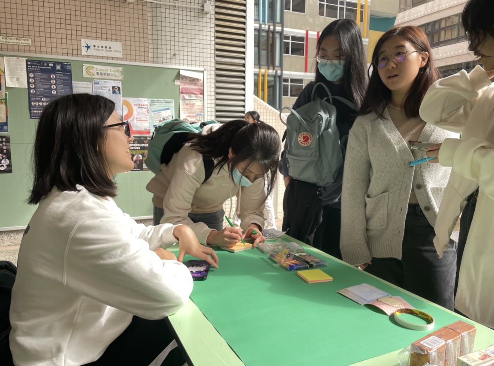
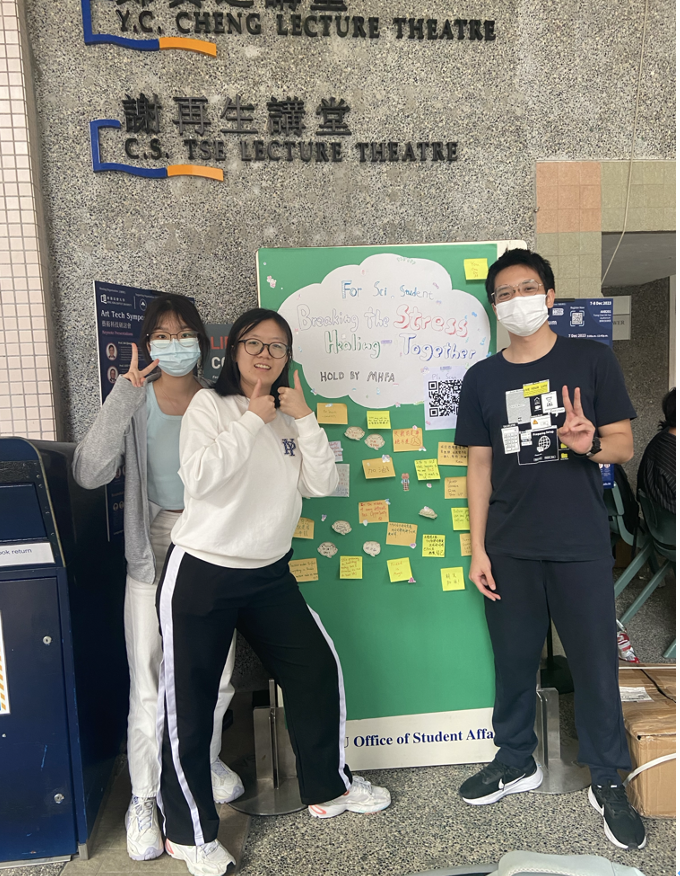

Mental Health First Aid — Event Planner & Captain
HKBU · Student Leadership
Sep 2023 – Aug 2024
Mental Health
Leadership
Event Planning
Overview
I served as the Mental Health First Aid Captain at HKBU, leading a team to plan and promote mental health awareness activities across campus. The goal was to create safe, approachable spaces for students to relax, communicate, and decompress during stressful academic periods.
What I Did
- Led the Mental Health First Aid team as Captain.
- Planned and promoted mental health awareness events throughout the academic year.
- Set up on-campus booths providing students with opportunities to relax, communicate, and decompress.
- Coordinated with campus departments and student bodies for event logistics and promotion.
Outcome
The events reached a wide student audience and offered a welcoming space for conversations around mental well-being. I strengthened my leadership, event planning, and team coordination skills.
Photos

